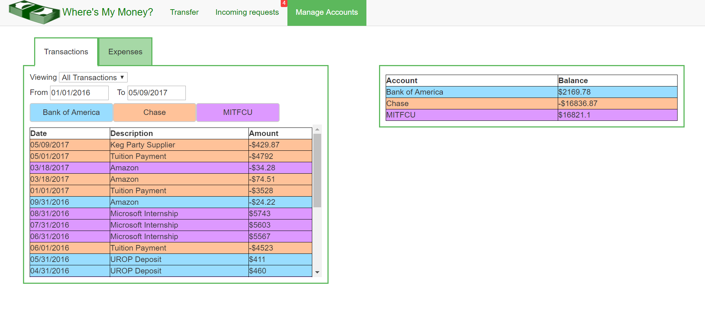

Parents with college students struggle to manage family expenses because of multiple financial accounts. College students incur a new expense, including semi-regular tuition payments, loan payments, and miscellaneous costs like books and travel. The process of keeping track of these different accounts and sending money to their kids is time consuming.
This web application was made for a class on user interfaces and was designed to address this problem statement. We focused on simplicy in design so that parents unfamiliar with technology could navigate through the website with ease.
(Note: Since the class was focused only on front-end design, the website has no formal back-end and displays fixed data upon loadup. Consequently, any changes made are not saved when the website is refreshed).
ABC files are text files that encode music via ASCII characters. As such, they can be easily shared and edited on computers. However, because they are text files, an external program is needed to play the music they encode. This project, written in Java for a class on software construction, parses ABC files and represents various musical elements like notes, rests, and chords as recursive data types, which are then fed into a MIDI player for users to listen to the encoded music.